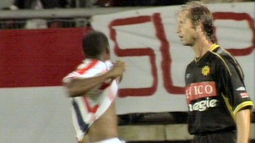

|
Willem II - Roda JC (3-1) 11 september 2004 |
Het ritueel van handen schudden waarbij tegenwoordig vrij
standaard jeugdspelertjes mee mogen dreutelen.
Willem
II - Roda JC (3-1) 11 september 2004
Het ritueel van handen schudden waarbij tegenwoordig vrij
standaard jeugdspelertjes mee mogen dreutelen.
Defensief geklungel van Senden en Kujovic biedt Bobson de kans
om al in de 5e minuut 1-0 te scoren.
Redan verkoopt oud-ploegmaat Brouwers een smerige elleboog in
diens gezicht.
De hevig bloedende verdediger moet het veld verlaten waarna de
jonge aanvaller Cissé Sekou in de 24e min. zijn debuut mag maken.
Na wederom slecht verdedigingswerk scoort Bobson 2-0 (25').
Nadat hij bijna scoorde gebaart Sergio de Rodasupporters hun
club
aan te moedigen.
Sekou scoort uit een hoekschop 1-2 (53').
Een droomdebuut voor deze jongen.
Het sprongvermogen van Cristiano.
Bobson loopt Senden eruit en brengt de bal voor de voeten van
Redan die de wedstrijd beslist: 3-1 (64').

Hij heeft zijn shirtje al bijna uit maar bedenkt zich op tijd
dat dit
tegenwoordig een gele kaart oplevert.

Onthutsend om te zien hoeveel kansen Willem II kreeg om de
score
nog flink op te voeren zoals hier.....

.... en hier.
Verdere schade bleef Roda bespaard. Het gemis van Kone, Vicelich
en
Bodnar alsmede het vroege uitvallen van Brouwers kunnen niet verbloemen
dat Roda dringend versterking behoeft en dat er organisatorisch nog veel te
sleutelen valt.